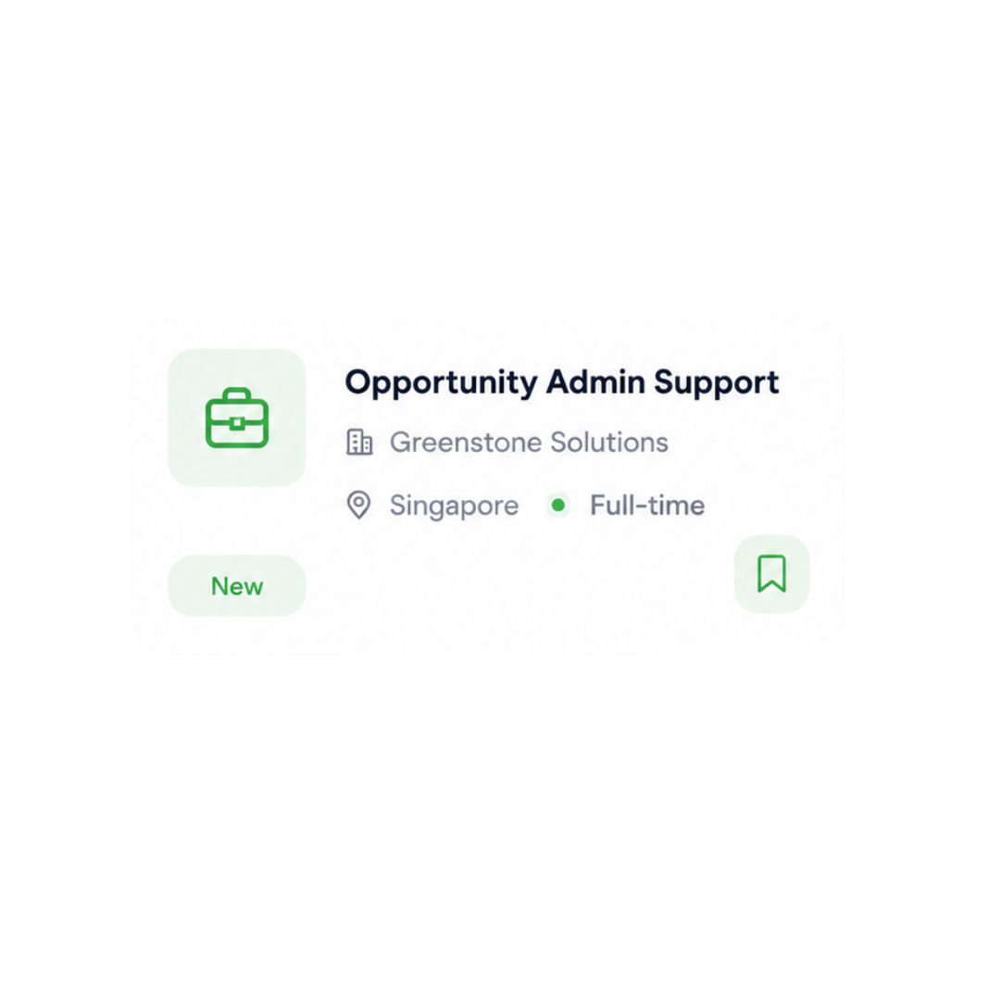
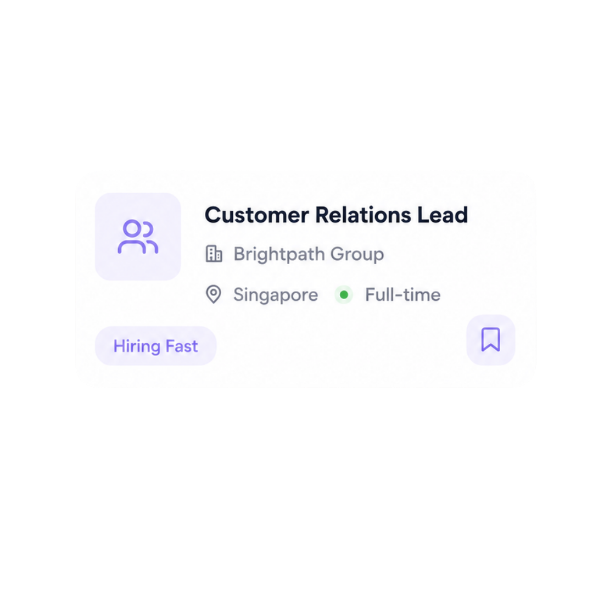
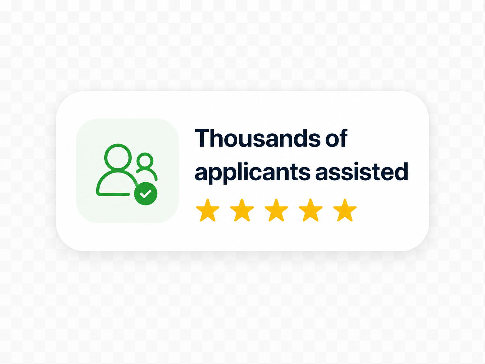

Curated Flexible Opportunities
Remote-friendly, part-time, full-time, contract, and project-based roles in one place.
Explore curated remote-friendly, part-time, full-time, contract, and project-based opportunities across support, admin, operations, customer service, and online roles.
Browse job details, work arrangements, and pay information where available before you apply.



Remote-friendly, part-time, full-time, contract, and project-based roles in one place.
Review key job details, work arrangement, and pay information where available before applying.
Submit your application for a specific role through Jobs Hutch.
Suitable applicants may be contacted directly by the employer or hiring partner via WhatsApp or email.
Opportunities are selected for Singapore-based job seekers, subject to each employer’s eligibility requirements.
Browse available roles below. Work arrangements, pay details, and hiring decisions are set by each employer.
Supporting merchant teams with product updates, order checks, and simple merchant-account tasks.
Who this may suit: those comfortable using digital tools and following clear workflows.
Apply NowSupporting project teams with task tracking, document updates, and routine follow-ups.
Who this may suit: those comfortable coordinating by email or chat.
Apply NowSupporting finance teams with invoice tracking, data entry, and document filing.
Who this may suit: candidates with some admin or accounts experience.
Apply NowAssisting with digital document checks and employee data updates for hiring employers.
Who this may suit: those who are careful with details and follow checklists well.
Apply NowAssisting food merchants with menu updates, order checks, and basic platform-support tasks.
Who this may suit: those comfortable with detailed admin work in a fast-moving environment.
Apply NowReviewing digital content to ensure it follows employer guidelines.
Who this may suit: those who read carefully and follow simple rules consistently.
Apply NowRole availability, work arrangements, pay details, payment schedules, and hiring decisions are determined by the employer. Jobs Hutch provides a platform for job seekers to browse and apply for available opportunities.
Browse curated opportunities, submit your application for a specific role, and hear back from the employer if you are shortlisted.
Explore flexible, remote-friendly, part-time, full-time, contract, and project-based job opportunities.
Choose a role that matches your interests and submit your details through the application form.
Your application is sent to the relevant employer or hiring partner for review.
If shortlisted, the employer or hiring partner may contact you directly through WhatsApp or email.
How applications work, who contacts you, and what to expect after you apply.
Your application will be shared with the relevant employer or hiring partner for the role you selected. Suitable applicants may be contacted directly via WhatsApp or email.
Select the role you are applying for and share accurate contact details so the employer can reach you if you are shortlisted. Jobs Hutch is a job platform, not the employer.